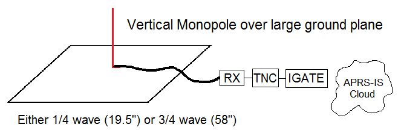
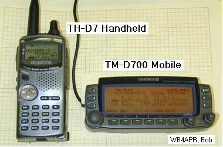
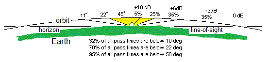
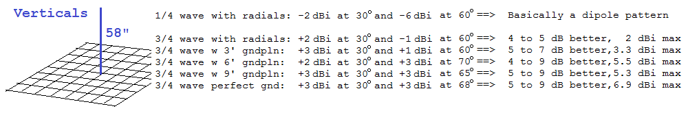
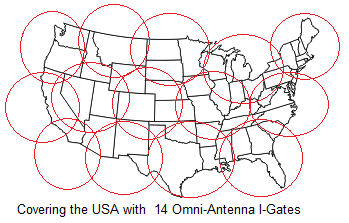
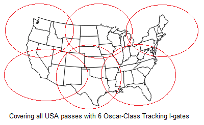
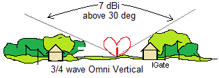
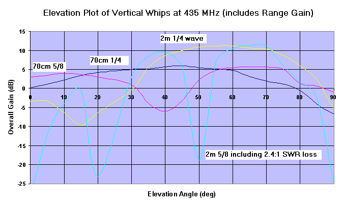
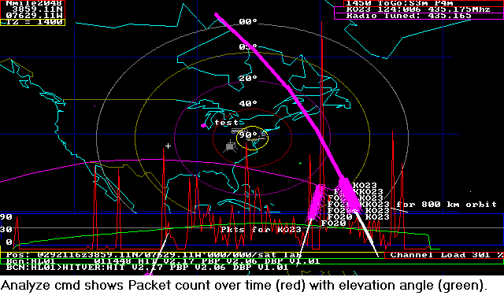

lastname@usna.edu
The map above shows the ground stations that have IGated PSAT packets to the APRS-IS (internet system). Although these are the same stations listing to 145.825 as the ISS, the ISS station is 14 dB stronger (10W versus 0.35W for PSAT). So only IGates with good weak signal performace are successful with PSAT. As you can see, we need IGates in Hawaii, India, China and the Southern Hemisphere. The map above shows large "skyprints" of typical Oscar-class trtacking IGates. In contrast, this page below shows how easy it is to set up a much simpler OMNI APRS Satgate.
 APRS Satllite Omni IGATE antennas: This page details how to make a simple but effective omni antenna for low-cost IGates to feed satelite data into the APRS-IS system. But first, some background.
Slightly Related... See how to predict passes simply by time-to-next pass and how to use a simple $70 TV rotator for 98% as good as the typical $700 AZ/EL rotator.
ASTARS SATELLITES: ASTARS stands for APRS Satellite Tracking and Reporting System and refers to digital relay satellites and the global APRS internet linked system of ground stations that tie it all together into full time 24/7 access to satellite downlinks on the web (See ISS) and (See PCsat). ASTARS dates back to 1998 alowing end-user-to-end user real-time digital data exchange typically between mobiles and handhelds. [See W4HFZ's Installation]. Email from handhelds is easy using any of the Kenwood or Yaesu APRS walkie-talkies. See the Satellite Simulated Emergency Test page.
IGate Tracking: An IGate does not need any tracking software to know when the sateliltes are in view, since the OMNI antenna doesnt need to be pointed. Just about everything about this antenna is ideal for an unattended-non-tracking-IGate. First, it has high gain at high elevations where satellites are stronger. And it has lower gain on the horizon where it is not needed. In fact, gain at low elevations is detrimental for not just the reason of a higher noise floor, but also for the unique I-Gate donut hole (discussed later). Either of the Kenwood APRS radios are ideal as IGates since they are dimultaneous dual-band and they have internal 1200 and 9600 baud TNC's. Just plug them into a serial port, load APRS IGate software... done.
 SATELLITES: The following satellites have supported ASTARS:
FUTURE SATELLITES IN WORK at the Naval Academy:
 Satellite Pass Geometry: First it is important to visualize satellite pass geometry so the drawing at right shows the orbit and Earth drawn to actual scale. The first thing to notice is the almost 3-to-1 one difference in satellite range resulting in nearly 10 dB difference in path loss from the Horizon to overhead as shown in the dB numbers in the upper right. It is clear that satellites are much stronger “overhead” than they are on the horizon. This means that for operating LEO satellites, you can get quite stong signals using just an omni antennas optimized for high elevations (region shown in yellow). Of course you should also notice that such an antenna is not good for normal terrestrial use).
Another thing to notice is how fully half of all satellite time in view is at low angles and far away and this is why full horizon-to-horizon satellite antennas need high gain and tracking at the horizon. The Elevation angles are shown on the left and percentage of time a satellite is within those angles are shown on the right.

Omni Vertical Gains: The table above shows the 4 to 9 dB advantage of 3/4 wave vertical over a conventional 1/4 wave vertical with only 4 radials. Radials are often called "ground planes" but are nothing of the sort relative to the antenna pattern. To get the full 3 dB possible ground reflectin gain, the ground plane has to be several wavelengths across. Note, that this 58" vertical is 3/4 at VHF with great gains but is 9/4 at UHF and is no longer effective at UHF because the UHF gain lobe is now so narrow and so "up" where satellites rarely cross.
  Overall Effective Gain: The combined 6 dB closer signals (Range gain) and the 5 to 7 dBi gain of a vertical over a large groundplane gives the 3/4 wave vertical antenna an 11 to 13 dBi gain similar to typical OSCAR Class tracking beams, but of course, only in the cone above about 25 degrees. But the advantage is no moving parts, no tracking system, and low cost. Of course satellites are only in this magic cone (shown in yellow) for about 25% of the total time in view.
IGate Effectiveness: But IGates are unique, in that they work as a distributed network of modest gain antennas but cover the full sky simply by their sheer numbers. Although all passes over the USA can be captured by maybe six ideally located Oscar-class tracking stations as shown above, the same all-USA coverage can be obtained by just havng twice as many OMNI I-gates.
The I-Gate Donut Hole: Steve Dimse has pointed out the presence of a Satellite User Donut hole in the above ideal patterns. This is not caused by the antenna, but by the simple fact of the deisgn of the APRS-IS cloud and how it works with IGates. Since the APRS-IS has only one goal, that is, to capture every packet heard, it captures the first packet (and first copy only) and then ignores all subsequent digipeats of that same packet in order to not waste data Bandwidth. This works fine for all terrestrial packets, first copy always makes it to the APRS-IS, but it is detrimental for Space digipeated packets.
In contrast to terrestrial use, the goal of most APRS Satellite users it to have the APRS-IS capture their Satellite-digipeated packet and to show the path was actually via a satellite. But if a user transmits in the vicinty of a satellite IGate and is heard direct, that packet goes into the APRS-IS and the subsequent successfully digipeated satellite packet is a dupe and is ignored by the APRS-IS. Since the satellite web pages (ARISS.NET and pcsat.aprs.org) capture packets for display based only on detecting the satellite digipeater's callsign, then these nearby user packets are not found nor displayed.
 Keep the IGATE antenna Low: The best way to mitigate the Satgate Donut hole is to keep the IGate antenna low. Keep it as low as possible or even on the ground so that it can still see the sky above about 25 degrees (where it is effective) but cannot see the horizon (where it is useless anyway) and where other nearby APRS satellite users may be transmitting. A terrestrial APRS Iagte wants to be as high as possible to hear surrounding mobiles (maybe out 10 to 15 miles) but a Sateliilte Igate wants to be as low as possible because its terrestrial range HURTS nearby satellite users.
See also the Rotator interface and Click here for D700 SETUP
OMNI Satellite IGATE Antenna Band Coverage and Selection: Since most vertical VHF antennas also match to the UHF band a single whip can serve as a dual band antenna. This makes the 19" whip over a large ground plane an ideal dual band omni satellite antenna. It gives 5 dBi gain on VHF above about 15 degrees and gives nearly 7 dBi as a 3/4 wave monopole on UHF above about 25 degrees. SO if the IGate radio is going to be dual band, then use the 19 inch whip and have gopod coverage for both bands.
VHF band only IGate: But the 19" vertical only has 5 dBi gain on VHF. By making the vertical whip be 3/4 wave at VHF (about 58" tall?) then it will be a 7 dBi gain VHF and ideal for the weak signal coming down from PSAT. It will still do fine for ISS even though it has less gain at low elevations, because the ISS is 14 dB stronger than PSAT and will be heard at all elevations too. This 58" antenna also has even higher gain at UHF, but as a 9/4 wave antenna it has an ever narrower cone over ever smaller part of the sky.

Example Antennas: The figure above shows the effectiveness of a variety of common antennas for omni satelilte work. Notice that ALL gains are plotted for UHF GAIN here, no matter what their initial design label. This is not the VHF topic of this web page, but is valuable for showing the elevation profile of a variety of vertical antenna lengths. The dark blue 1/4 wave vertical shows good gain above about 15 degrees. The 5/8 wave is good on the horizon (a popular mobile antenna) but goes negative above 30 degrees! The 19" 2m antenna is working here (yellow) as a 3/4 wave gain antenna and shows very good performance above 30 degrees. ANd for the final comparison, the Cyan colord plot shows how poorly a typicla 5/8 wave 2m antenna works when listening to UHF satellities. ALthough the gain of all vertical antennas fall off above 80 degrees, remember that a typical satelliitee is in that high cone for less than 1% of the time!
Actual Data: To validate the data for the 3/4 wave vertical, I built a 1575 MHz scale model of the antenna AND a ground plane about the scale size of a car roof and connected it to a GPS receiver and my SIGPLOT.BAS program. Letting it run all night, gives an all-sky GAIN PLOT using the satellite signal strengths as the RF source. Thus, over time, you get known RF from all angles and all azimuths and the SIGPLOT program produces a real-world plot of actual antenna pattern as shown below. I did it twice, the Green is the 3/4 wave and Red is the 1/4 wave antenna.
Notice the high angle gain of the 3/4 wave at all angles above about 25 deg. Although the 1/4 wave is better down to about 10 degrees. But there is no value to any gain at low elevations for most satellites because they have 6 dB greater path loss due to the greater distance to the satellite and due to their small transmitters, they cannot be received by any omni that low anyway.

PSAT Tracking by ear: Since PSAT also has a UHF PSK31 FM downlink, it is a great tool for knowing the location of the satellite by ear. Just listen to the degree of quieting and what channel (+/- 5 or +/- 10 kHz) is the cleanest. Doppler tuning the UHF downlink is trivial to do by ear. All passes begin at +10 KHz and move down in 5 KHz increments down to -10 KHz. It only takes a fraction of a second to test QSY to hear if it is time to tune or not. Eventually you can hear when it is time... For omni antennas where you wont hear the satellite on the distant horizon anyway, then start at +5 and move twice to -5 during the brief pass.
EFFECTIVENESS: The APRStk screen shot below from over a decade ago shows the ANALYZE command in APRStk(dos) which plots the packet count over time (in red) along with the Elevation Angle (in green). This is useful to compare the relative performance of your station. Notice how KO23 has just completed a pass and the packets began being received on my 19" 3/4 wave Omni at about 30 degrees and then it was received all the way down to about 20 degrees. The 5 evenly spaced spikes are local TNC reset data that occurs every time the THD7 is commanded to QSY down 5 Khz. Two other spikes are spurious re-tunes and the big one, I caused by QSYing the radio to 144.39 for a few seconds before I realized I wanted to save this plot. These peaks are not packets from the satellite. The TMD700 does not generate this extra data, since it does not reset the TNC everytime you send a QSY command.

COME JOIN US LIVE ON THE BIRDS!
FUTURE: This ASTARS concept has been approved for operation via many satellties over the years such as AO16, LO19, IO26, SO35, OPAL, SAREX, PCsat1 & 2, Sapphire, ANDE, RAFT and ARISS. There is no reason why it cannot be supported on all digital amateur satellite missions once the primary mission or science objectives have been met. We encourage experimentation and consideration for future applications. This page dates from 2001, but has been updated contnuously (though not so well from 2006 to 2014 when there were no new APRS satellities). But now with PSAT and the coming QIKSAT's and a new radio for ISS, then lets get those permanent OMNI Igates up and listening.
Return to the APRS HOMEPAGE
![[See W4HFZ's Installation]](http://www.aprs.org/astars/W4HFZ-mobile.jpg){kind=link}